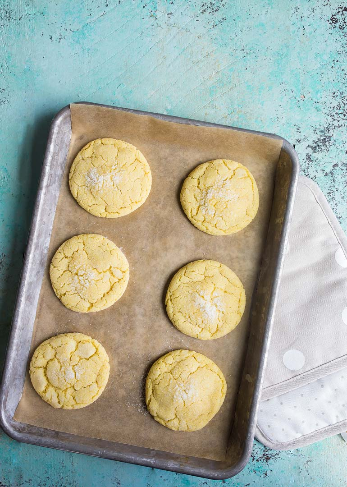

Sugar Cookies

Image Credit
Description
Description will go here
Ingredients
- 4 tablespoons unsalted butter, melted
- 1/3 cup granulated sugar
- 1 large egg yolk
- 1/2 teaspoon vanilla extract
- 1/2 cup + 2 tablespoons all-purpose flour
- 1/4 teaspoon baking soda
- 1/8 teaspoon fine salt
Steps
- Preheat the oven to 350 degrees and line a small baking sheet with parchment paper
- Stir to combine the melted butter, sugar, egg yolk, and vanilla extract.
- Add the flour, baking soda, and salt evenly over the dough and stir just to combine
- Press dough flat and evenly in the bowl and then divide in half. You should get 3 cookies from each half (6 total)
- Roll each dough ball lightly in granulated sugar and space evenly on the baking sheet
- Bake for 10-12 minutes, until they spread, start to crackle, and appear dry on top
- Let the cookies rest on the baking sheet for 2 minutes before moving them to a cooling rack
Recipe Credit